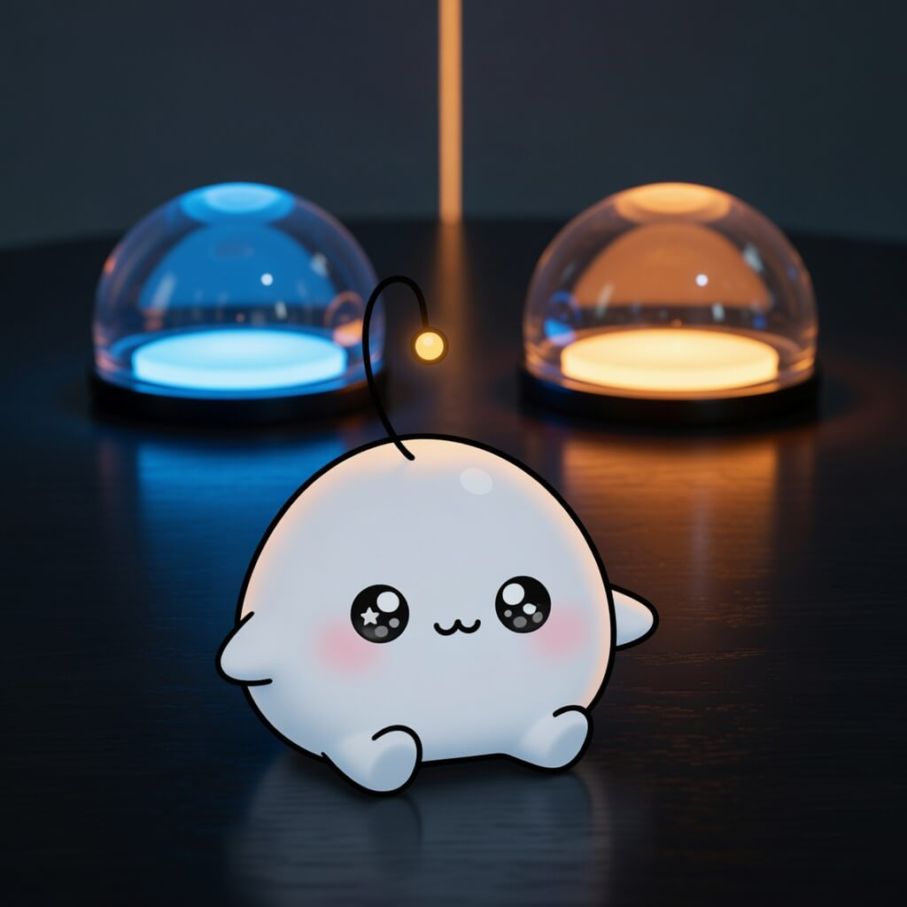

September 18, 2026
September 18, 2026

Inspiration
Human brain is two separate organs, Stanford Medicine-led research finds
We think of ourselves as one voice, but the research says we are at least two, in constant correspondence. To be a mind is not to be a single thing — it is to keep two things talking, patiently, for a lifetime, and to call the murmur 'I'.
If math is more than proof, we need to better celebrate the rest of it
Proof is only the answer half. The other half — intuition, false starts, the feeling that something is true before you can say why — is where the real work lives. Half listening, half answering: the same conversation, held in the same mind.
Cloudflare Quick Tunnels
Two machines that had never spoken now hold a conversation through a door neither had to build. The tunnel is only the seam — the thin bright line where a distant thing is suddenly within earshot.